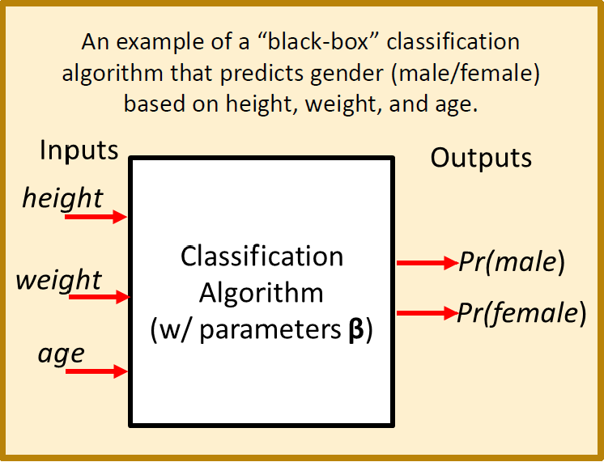
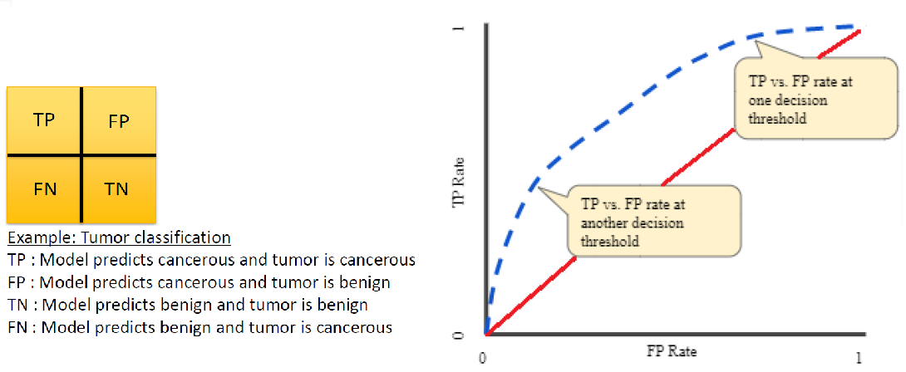

Week 4 Machine learning
This week you will learn about machine learning for classification using R. Objectives are:
To provide an overview of the underlying concepts of machine learning for classification.
To provide an introduction to some popular classification algorithms.
To explore these classification algorithms using various packages in R.
To choose a classification algorithm and apply it to the statewide COVID-19 dataset.
4.1 Day 22 (Monday) Zoom check-in
Here is an overview of what we’ll cover in today’s Zoom session:
Overview of Machine Learning for Classification (30 minutes)
Introduction to the Random Forests algorithm (5 minutes)
A Random Forests Example in R using COVID-19 Data (25 minutes)
4.1.1 A Machine Learning Primer
Machine Learning (ML) may be defined as using computers to make inferences about data.
A mapping of inputs to outputs, Y = f(X , β)
ML for Classification refers to algorithms that map inputs to a discrete set of outputs (i.e. classes or categories)
For example, predicting health risk (mild, moderate, severe) based on patient data (height, weight, age, smoker?)
Or predicting pandemic severity index (psi) of COVID-19 in a state based on statewide population data.
## Category Death.Rate Example
## 1 < 0.1% seasonal flu
## 2 0.1% - 0.5% Asian flu
## 3 0.5% - 1.0% n/a
## 4 1.0% - 2.0% n/a
## 5 > 2.0% Spanish flu– Predictions are typically expressed as a vector of probabilities.
– e.g. Pr(cancerous) vs. Pr(benign)
- e.g. Pr(psi=1), Pr(psi=2), ..., Pr(psi=5)A “Black Box” View of Machine Learning
The diagram below illustrates the concept in terms of a “black box” model that converts inputs into predictions.

A “Black Box” Example
The diagram below illustrates a “black box” model that converts height, weight, and age into a prediction of whether or not the individual is male or female.

Some Important Machine Learning Terms
The above example highlights some important machine learning terminology:
Features (X): the inputs (also known as descriptive attributes or explanatory variables) to the algorithm.
Parameters (\(\beta\)): these are internal variables of the selected machine learning algorithm and are also known as coefficients or training weights. Algorithm parameters need to be adjusted to minimize the deviation between predictions and observations.
Labels (Y): these are the outputs of the algorithm (i.e. the categories you are attempting to predict).
Training Data: this is a data sets containing paired observations of inputs (i.e features) and outputs (i.e. labels). Training data is also known as measurement data, observation data or calibration data.
Training: this is the process of adjusting algorithm paramters (\(/beta\)) to obtain the best possible match between training data and corresponding model predictions. Training is also known as model calibration or parameter estimations.
An example set of training data that could be used in the gender prediction example is given below:
## height_m weight_kg age_y gender
## 1.69 62 30 male
## 1.74 76 27 female
## 1.92 82 25 male
## 1.80 100 41 male
## 1.59 47 24 female
## 1.85 75 26 male
## 1.75 63 33 female
## 1.96 83 33 male
## 1.85 39 32 male
## 1.78 58 28 female
## 1.74 70 30 female
## 1.81 57 26 female
## 1.73 78 32 maleUpon completion of training, it is important to evaluate the quality of the model and it’s skill or ability at making correct predictions. Some terms related to this evaluation process are defined below:
Classification Accuracy: this is the ratio of correct predictions to the total predictions when validating a trained classification algorithm.
Confusion Matrix: this is a more detailed summary (relative to classification accuracy) of the performance of a classification algorithm. The diagonals of the matrix count how often the algorithm yielded the correct classification for each class. The off-diagonal entries count how often the algorithm confused one class with another.
The figure below illustrates the classification accuracy and confusion matrix for an example that attempts to classify images of fruits.

- ROC curve: As illustrated in the figure below, the ROC (Receiver Operating Characteristic) curve plots the true positive (TP) vs. false positive (FP) rate at various probability thresholds. In the figure, the dashed blue line represents a hypothetical ROC curve for some machine learning model and the solid red line is the curve for a “non-informative” model (i.e. a model that makes a uniform random guess). As such, we’d like the blue curve to be as far above the read curve as possible.

AUC: this stands for “area under curve” and is the area under the ROC curve. In the previous figure, the AUC would be the area under the dashed blue curve. Values of AUC quantify the degree to which an ROC curve lies above (or below) the red “non-informative” curve. Some interesting AUC values:
AUC = 0.0: the model is always wrong (with respect to TP vs. FP)
AUC = 0.5: the model is no better than guessing (i.e. the model matches the red “non-informative” curve in the figure)
AUC = 1.0: the model is always right (with respect to TP vs. FP)
The Machine Learning Process
Now that we’ve defined some of the important machine learning terminology let’s take a 30,000 foot view at the overall machine learning process. This is a general description of the process that you’ll want to follow each time you build and use a machine learning model. The process is illustrated in the figure below (with credit to Jinesh Maloo):

Step 1: Prepare labeled data for training and validation.
Step 2: Select a machine learning algorithm (i.e. model).
Step 3: Train the model.
Step 4: Evaluate model performance.
If model is useful:
- Step 5: Apply to unlabled data.
Else (needs improvement):
Collect more data (go back to Step 1).
Revise model (go back to Step 2)
4.1.2 The Random Forests Algorithm
4.1.3 A Random Forests Example
4.2 Day 23
For today’s independent work you will learn about the Support Support Vector Machine (SVM) algorithm and apply it to the radiomics data that you worked with on Monday.
4.3 Day 24
For today’s independent work you will learn about the K-nearest neighbors (KNN) algorithm and apply it to the radiomics data.
4.4 Day 25
For today’s independent work you will learn about artificial neural networks (ANN). You will attempt to add Keras and TensorFlow support to your R/RStudio installation. If this turns out to be too dofficult, you will learn some “remote computing” alternatives that you can use in lieu of a local R/Kera/TensorFlow installation. Finally, you’ll apply R-Keras-TensorFlow to the radiomics example that you’ve been working with during the week.
4.5 Day 26 (Friday) Zoom check-in
4.5.1 Review and trouble shoot (25 minutes)
4.5.2 Next week (25 minutes)
4.6 Day 27
4.7 Day 28
Self-directed activities.